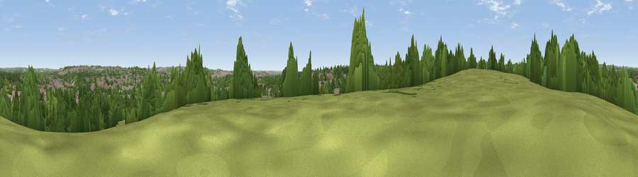

Viewpoint near Bulwell
#40322 in England · top 80% of its area beats it · near BulwellWhere it is
The exact computed spot (SK 53325 44125). Click the marker for map links.
The view, rendered

A 360° render of this exact spot computed from the terrain model, tree cover and land cover — summer colours, afternoon light, calibrated against photographs of famous viewpoints. Real trees, hedges and buildings will differ in detail.
The panorama
Grey silhouette: terrain skyline in each direction (720 bearings, Earth curvature and refraction included). Dashed green: skyline with trees (+15 m) and buildings (+8 m) as obstacles. Blue strip: how far the ground is visible on each bearing.
Where the view opens
Wedge length = distance to the farthest visible ground on that bearing (vegetation-aware). Rings at 10, 25 and 50 km.
What fills the view
43% built-up · 39% woodland · 14% grassland · 3% cropland
Angular shares of the visible panorama (visual magnitude), not map area. Landscape diversity 0.49 (0–1 Shannon).
Key numbers
More beautiful places nearby
The staircase of upgrades: each row has a higher view potential than everything closer. Driving times are estimates from straight-line distance, calibrated against real road routing — check an actual route before setting out.
| Place | Direction | Drive | Score |
|---|---|---|---|
| Windmill Hill | WSW · 3 km | ~7 min | 44.8 |
| Viewpoint near Watnall | WNW · 4 km | ~9 min | 55.1 |
| Viewpoint near Strelley | SW · 4 km | ~9 min | 62.6 |
| Viewpoint near Arnold | ENE · 7 km | ~15 min | 64.1 |
| No Man's Lane | SW · 10 km | ~19 min | 65.8 |
| Viewpoint near Hazelwood | W · 20 km | ~33 min | 66.3 |
| The Tors | WNW · 21 km | ~35 min | 68.9 |
| Crich Stand | WNW · 22 km | ~36 min | 73.0 |
52.99181, -1.20703 · source: screening · position refined by local search. Computed location — check access rights before visiting.